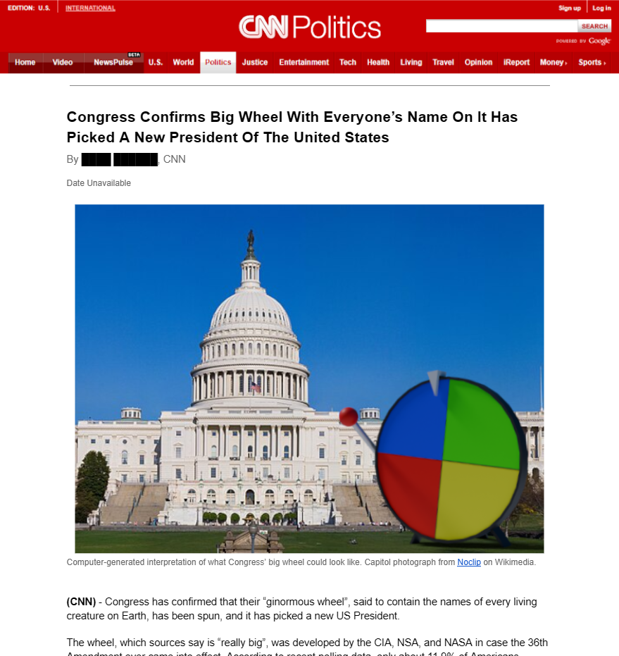

| The 241st Hour | |
|---|---|
|  | |
| The CNN article | |
| Author: | Silver Shorthair |
| Link: | Click |
The 241st Hour (Chapter 22)
The 241st Hour is the twenty-second chapter of the fan fiction. It focuses almost entirely on SpongeBob's confrontation with Nosferatu, with the only shifted focus being an interlude about the 36th Amendment.
Plot Summary
Part 1
As SpongeBob and Nosferatu prepare to fight, SpongeBob remembers a strange voice, the narration from chapter 10, saying "He was a coward at heart, that would never change." We learn that for his entire life, SpongeBob has been able to hear the meta narration, initially just by the French narrator. But when Red Herring arrived, marking the start of the fanfic, SpongeBob began to hear what each author was writing, regardless of where he was, giving him the power to know everything that was happening, and what the authors had to say. He questions the validity of what the chapter 10 voice had said, given that he was actively facing off against Nosferatu, but begins to lose his confidence when the narration lets it slip that Nosferatu cannot be killed.He thinks about what his fallen friends would want, and upon getting to Mr. Krabs, has a flashback. He remembers that after asking about raises, Mr. Krabs gave him a disingenuous motivational speech, which ends with Mr. Krabs telling him he's a Fry Cook. The message he takes away from that is that Mr. Krabs would've wanted him to remember who he was, and the flashback ends. He drops his sword, to the confusion and anger of Nosferatu, and then grabs his Krusty Krab hat and spatula. As Nosferatu continues to get angrier, the narration itself tells SpongeBob to dig. After SpongeBob becomes confused, the narration repeats itself, and SpongeBob follows the instructions, digging into the ground. Nosferatu becomes even more confused and angry, but watches SpongeBob for an entire day. The dirt beneath SpongeBob suddenly falls away, and he is sucked into a tube.
Nosferatu chases after him, and after going through a very bumpy ride through the tube, ends up at The Krusty Krab, where he realizes SpongeBob is cooking a Krabby Patty. He becomes even more enraged, viewing it as mockery, before realizing that SpongeBob is just a Fry Cook doing what he loves. In that moment, Nosferatu becomes overwhelmed by a sudden sense of nostalgia, and passes out. When he wakes up, SpongeBob offers him a Krabby Patty, and they have a meal together. Nosferatu asks SpongeBob how he knew about the tube, and SpongeBob questions if he should tell Nosferatu about his power. The narration seems to answer, saying he could not tell Nosferatu, and SpongeBob lies about just feeling drawn back to his old job, an answer Nosferatu accepts.
Due to SpongeBob's kindness and the nostalgia he feels, he offers SpongeBob a job as his chef. SpongeBob thinks about the offer, and eventually decides that even though Nosferatu is evil, he could use the role to help the resistance. He accepts the offer, and Nosferatu says that they need to get out of the airport because he can't be away from The Grey House for too long. Nosferatu then remembers where he is, and realizes that the situation is really not looking good for him.
Part 2
In an explanation similar to chapter 4's opening ramble about 12, it is revealed that there is a 36th Amendment that was made in preparation for Nosferatu's regime, which states that if The President is absent for 241 hours, an overly-convoluted and difficult challenge will occur to determine the new President, and if that process fails, they will just use a "Big Wheel With Everyone’s Name On It" to decide. The challenge obviously fails, and the narration cuts off as an article from CNN explains the lore behind that Big Wheel, eventually announcing the new President of The United States to be Chase Oliver.Part 3
Nosferatu tries to get a cell signal to find out what's happening, but SpongeBob already knows. He thinks about his power, questions why he was given it, and wonders what the nature of the voices are. The text representing his thoughts turn yellow, and the chapter ends with the narration speaking in first person, stating "SpongeBob knew one thing. He knew that once I placed down the pen, his life would be in the hands of another."Character Appearances
Location Appearances
Author Comments
-
This chapter features several references to the number 12, with my personal favorite being the fact that the
chapter's word count is 2424.